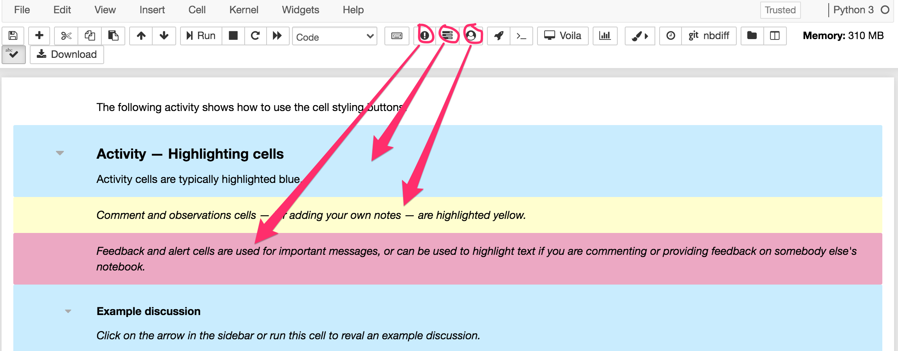
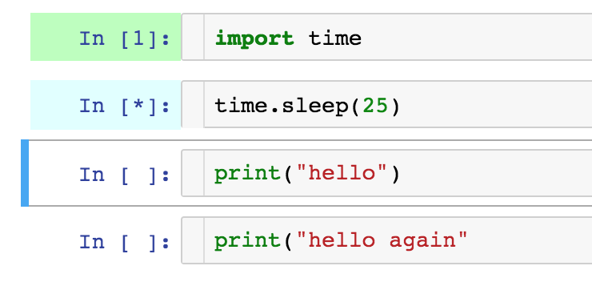
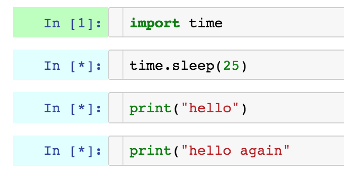
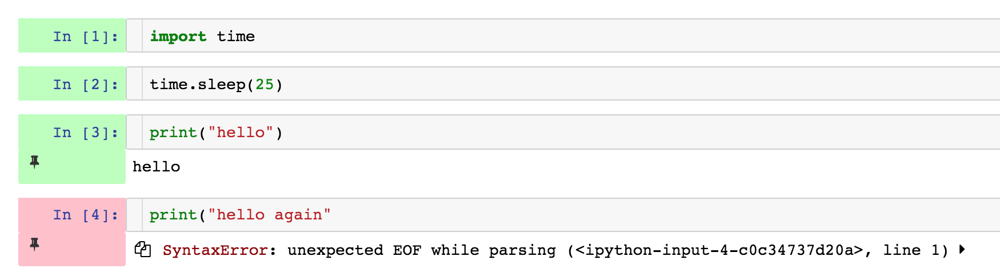
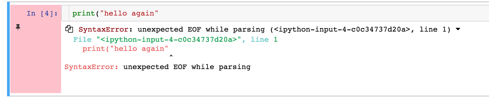

2 The interactive read-writable notebook environment
Contents
2 The interactive read-writable notebook environment¶
In this short activity, you will have an opportunity to practise using the Jupyter notebook interface. You won’t run any robot simulator programs until a later notebook.
2.1 Working with notebook files interactively¶
If you are reading this document in a live Jupyter notebook environment, you will be able to interact with it directly.
For example, you can correct the splelinG mistake in this sentence by editing it directly. Double-click on this paragraph to put this Markdown cell into Edit mode, and the cell will become editable. Correct the spelling mistake, then ‘run’ the Markdown cell to re-display it as formatted text in one of the following two ways:
either click on the
Runbutton in the toolbaror use a keyboard shortcut:
Shift-Return(that is, the Shift key and the Return key at the same time).
To look up keyboard shortcuts, you can use the Esc-h keyboard shortcut (press the Escape key and then, quickly after, the h key, or the Escape key and the h at the same time): in the ‘Edit mode’ area, look for ‘run selected cell’. Alternatively, from the notebook Help menu, select the Keyboard shortcuts option.
Previewing formatted Markdown¶
Markdown text is a simple mark-up language in which you can write styled text using simple (hopefully intuitive) text elements. For example, to emphasise a word using italics, write it as follows: *emphasis*.
You may notice my ‘starred’ text is not itself italicised. If you double-click on this Markdown cell to see its editable view, you will see I have ‘escaped’ the * characters around the word *emphasis* with a backslash character – \ – as if to say: do not process this. Note that if you have a space between a * and a letter at the start of a word, then the styling is similarly not applied; likewise, to ‘close’ the styling, you need to place the second * right next to the final character in the emphasised text.
When you have finished looking at the editable text, press Shift-Enter to return the cell to the rendered view.
That may all sound complicated, but hopefully it will become natural to you as you gain more experience of using the Jupyter environment.
Activity – Markdown as a natural, informal notation¶
You may find that you already use similar stylist techniques to Markdown syntax in an informal way when writing handwritten notes or emails. You may even find that some email environments or text editors actually treat your text markup as Markdown anyway.
Double-click on this cell to put it into Edit mode and record your observations here about where you have unconsciously used Markdown-style notation to emphasise or structure text. When you have completed your comments, run this cell using the toolbar run button or Shift-Return keyboard shortcut to return it to the rendered view.
My observations¶
Click the arrow in the sidebar or run this cell to reveal my answer.
If I make a list of items, I often prefix each list item, on a separate line, using a - sign.
I have also noted that my Microsoft Outlook and Slack clients emphasise text if I wrap it in * marks. The Slack client also styles text wrapped using backticks (`) in a monospace, code-style font.
As well as generating headings by prefixing a line with one or more # signs, Markdown also supports level 1 heading generation by placing one or more = characters on the line underneath the heading text and level 2 headings by using two or more - characters. Underlining a heading with one or two lines is a common technique when creating handwritten or simple text documents.
Level 1 heading¶
Markdown examples¶
This cell contains several examples of other forms of markup. Double-click on the cell to make it editable so you can see how the styling was generated.
Double-click on this cell to see how Markdown is used to create particular styling effects.
We can italicise text by wrapping it with single asterisk *...* or _..._ underscore elements.
Use a backslash character to disable the text processing effect; for example, if you wish to italicise a * character.
Strong (bold) emphasis can be introduced by wrapping text doubling up the number of * or _ elements.
Unnumbered list items:
are prefixed by a
-or single*character, followed by a space
are clearer in their text form if you precede the first list item with a blank line
sublists are indented, and are identified by prefixing the - or * marker by two spaces.
Numbered lists:
are identified by prefixing the line with
1.followed by a space.some flavours of Markdown may offer the ability to use alternative numbering schemes (letters, or Roman numerals, for example).
Headings are identified by starting the header line with one or more # characters, followed by a space and then the title or (sub)heading. The number of # characters identifies the level of heading required.
You can also identify a heading by placing two or more equals signs (==) on the line immediately below it, or a subheading by placing two or more dashes (--) at the start of the following line.
Dividing lines can also be added: just start a line with three or more dashes (---) prefixed by an empty line.
Inline code can be identified by wrapping the code item within backticks: `…`.
Blocks of code can identified by marking out an area using three or more backticks to start and end the block:
# comment
def hello(msg):
print(msg)
hello("my friend")
Syntax highlighting for a particular language can be enabled by declaring the language required immediately after the opening set of backticks (although rendering backticks in backticks can be tricky!). For example, starting a code block with ```python will cause it to be rendered using Python language syntax highlighting:
# comment
def hello(msg):
print(msg)
hello("my friend")
You can also add links you your Markdown text, using constructions of the form: [my link text](https://example.com).
2.2 Taking ownership of your notebooks¶
One of the difficulties in working with electronic texts is that they can often be hard to annotate. Interactive notebook style interfaces offer a different way of working, in that you can annotate or edit the text directly.
If you are using this notebook via the module VCE, you may already have noticed that some cells have a coloured background that is rendered using the pre-installed empinken extension.
Three buttons are provided that toggle the colour of selected code or Markdown cells:
activity cells (blue)
student annotation cells (yellow)
feedback and alert cells (pink).

Yellow cells are used as call to actions for you to make your own comments. If you create your own cells, you may wish to highlight them using the yellow (or pink) backgrounds so you can more easily return to them.
Click this cell to select it then practise using the toggle buttons to change its background colour.
2.2.1 Using the notebook highlighter pen¶
Another way of annotating the Markdown text materials is to use the highlighter pen from notebook toolbar.

Simply select the text you want to highlight in its rendered view, and then click on the appropriate highlighter pen colour.
Another way is to just start clicking on the Markdown cells, adding your own notes, commentary or reflection, or your own questions, explanations and examples, to the text.
There are risks associated with this of course – like accidentally deleting a chunk of module materials, or changing a working example to a broken one. But there are also many advantages – like making the materials meaningful to you. And if you want to distinguish your content from the provided materials, you can always highlight them, or put them in a Markdown cell of their own, with a heading that identifies the text in that cell as your own work.
2.2.2 Previewing style markup¶
Although I find it second nature to write in Markdown (I’ve been writing in simple text formats for a long time!) you may find it takes some getting used to, and that you keep having to flip between the edit view and the rendered view to make sure you are creating the text effect you intended.
To make it easier, if you enable the livemdpreview notebook extension, you can preview how your rendered Markdown looks in a preview window directly underneath a Markdown cell you are editing.
You may need to save your notebook and reload it in your browser after enabling the extension to see the effect. It should be enabled by default for any notebooks you open after enabling the extension.
A checkbox option in the extension’s configuration panel optionally allows you to display the preview alongside, rather then below, the Markdown cell being edited. The preview disappears when you return the cell to its display mode.
2.2.3 Popping out cells¶
Sometimes you may want to refer back to a particular cell, cell output, or cell and its output. The nb_cell_dialog extension that is pre-installed in the module VCE allows you to ‘pop out’ cells into a floating dialogue widget by clicking on appropriate toolbar buttons:
rocket button will pop-out Markdown and cell output
terminal (
>_) button will pop-out code cell and its output. Note: this is non-runnable.
Closing the dialogue puts the cell back where it came from (most of the time: I think there’s an edge effect if you pop the last cell in the notebook using the terminal button).
Run the following code cell to embed a video showing how to use the rocket toolbar button to pop-out a Markdown and cell output, and the terminal button to pop-out a code cell and its output.
from IPython.display import Video
Video("../images/popout.mp4")
2.2.4 WYSIWYG ‘text editor’ view¶
If you really cannot get to grips with writing raw Markdown, a WYSIWG editor is available.
Enable the jupyter_wysiwyg extension from the nbextensions notebook configuration tab on the notebook server home page. (You may find that access to the WYSIWYG text editor extension is disabled at first; at the top of the extensions configurator page, untick the disable configuration for nbextensions without explicit compatibility option.)
Save and reload your notebook. When you double-click on a Markdown cell to edit it, you should now see two buttons have appeared on the left-hand side of the cell, one with a Rich Text Editing tooltip when you hover over it, the other with a Run Cell tooltip.
The Run Cell button provides a convenient additional way of rendering a Markdown cell that is currently in edit mode. You also need to use this button to render the cell if you have been editing it using the rich text WYSIWYG editor.
The Rich Text Editing button provides a way of launching the rich text editor. This editor allows you to style your text, and immediately see the result, as you type. You can still see the raw markup text by rendering the cell and then double-clicking on it to take it into the edit mode. However, you may find that the marked-up text is not quite as clean as Markdown text: HTML tags are used to style the text and any previous Markdown annotations will be converted to their HTML equivalents.
2.3 Creating new cells¶
To create a new cell in a notebook, click on the + button in the notebook toolbar. A new cell will be created directly below the currently selected cell.
By default, a new cell is created as a code cell. To convert the cell to a Markdown cell type, change the cell type using the cell type drop-down list in the notebook toolbar from Code to Markdown.
A keyboard shortcut – Esc-M (that is, the Escape key followed by the letter m) – also converts a selected cell in Edit mode to the Markdown cell type.
2.4 Code cells¶
Code cells can be used to enter – and execute – Python code.
To run a code cell – which is to say, to execute the code contained in a code cell – click in the code cell to select it and then press the Run (‘play’) button on the notebook toolbar. Alternatively, use a keyboard shortcut – Shift-Return – to run the selected cell.
print("Hello!")
When a cell has successfully completed executing, the cell execution / run status indicator is coloured green. After running a code cell, a number in square brackets displays a cell execution index number. Each time a code cell is run, the overall index count goes up by one and is used to indicate the cell execution index (or ‘cell run number’) for that cell.
When a code cell is running, or waiting to run, it is highlighted with a light blue colour on the left-hand side. A * character also indicates the status of the running cell.
If you run all the cells in a notebook, then all the cells yet to be run, as well as the running cell, are highlighted with a blue run status indicator and the * cell run number.
If an error is raised that causes a code cell not to execute correctly, then the run status indicator is coloured pink and an error message is shown beneath the cell in the code cell display area.
Clicking on the arrow at the end of the error message will reveal the full error message.
2.4.1 Activity – Experimenting with the code cell run indicators¶
Run the following cells in turn to see the code cell indicators in action.
import time
# Wait for a specified "sleep" duration in seconds
time.sleep(5)
print("hello")
# This statement is badly formed and should raise and error
print("hello again"
2.4.2 Cell execution status – audible alerts¶
Audible feedback for successful and unsuccessful cell completion can also be enabled from the notebook Cell execution Status extension configuration panel; you may need to untick the disable configuration for nbextensions without explicit compatibility checkbox to enable the configuration panel).

Audible controls include:
audible alert of successful cell execution completion status
audible alert of unsuccessful cell execution completion status
heartbeat on long running execution (with a specified heartbeat interval)
spoken alert of errored run cell index
spoken announcement that all cells completed (with a specified minimum number of concurrent cells required prior to an ‘all cells completed’ announcement.
There is also an optional heartbeat pulse (default period 5 seconds; configurable) that can be used to indicate the continuing run status of long-running cells.
After changing the settings, you will need to reload the notebook in your browser for the changes to take effect.
2.4.3 Activity – Displaying code line numbers¶
Sometimes it can be useful to display line numbers in a code cell to more easily reference or refer to a particular line of code. Line numbers can be toggled on and off within a particular code cell using the keyboard shortcut Esc-L (that is, the Escape key and l).
When a notebook is saved, the line number toggled display settings are also saved.
# Example of code cell line numbering
# This is actually line 3...
Click in the above code cell to select it and practise toggling the line numbers on and off.
2.4.4 Code style¶
To make code as readable as possible, the Python PEP8 style guide provides guidance on how to lay out your code so that it is easier to read. Code style guidance includes things like:
use of white space within lines and between lines
naming conventions for function and variable names
maximum line lengths to maintain readability.
Throughout the notebooks, we have tried to use good practice, although PEP8 standards have not necessarily always been enforced. Various tools are available for warning about breaches of PEP8 style guidelines or even automatically formatting code so that it is style compliant, but these are disabled by default in these notebooks.
See Notebook Code Linting for more information about automatically linting code in Jupyter notebooks.
2.4.5 Activity – Creating new code cells¶
Single-click on this Markdown cell to ensure that it has the focus and then create a new code cell by clicking on the + button in the notebook toolbar. A new cell will be created directly below the currently selected cell, whatever type of cell it is. By default, newly created cells are created as code cells. The cursor focus is automatically moved to the new cell, so once it is created you can immediately start typing code into it.
Click on the + button in the notebook toolbar to create a new code cell, enter print('hello world') and run the cell to execute the code and see the result.
Feel free to create and run your own notebook code cells to try out your own code examples. Remember, the notebooks are yours. So make full use of them…
2.5 Creating and saving your own code¶
Throughout the practical activities associated with this block, you will have the opportunity to create and run your own programs to run within the notebooks’ Python environment as well as in the simulator.
Saving a notebook will save your code and any currently displayed cell outputs (the notebooks also autosave regularly), so you can close the notebook, shutdown the associated notebook process, and then restart the notebook and return to it later.
Although the current simulator view, any other displayed widgets, and the internal state of the simulator and the notebook’s own Python environment, are not saved, rerunning the code cells that create them will generate them afresh.
2.6 Embedding resources in the notebooks¶
You may already have noticed that you can embed image resources in Markdown cells. It is also worth noting that Jupyter notebooks can also embed a wide range of media types, including video and audio players.
You can even embed YouTube videos using just a YouTube video ID:
from IPython.lib.display import YouTubeVideo
YouTubeVideo('mGgMZpGYiy8')
2.7 And finally…¶
As well as using the provided notebooks, you are also encouraged to create and save your own notebooks containing your own code experiments. You should also feel free to use the simulator to try out your own self-created challenges and to satisfy your own curiosity about whether you can get the simulated robot to perform tasks of your own devising as well as the suggested activity tasks.
One thing you might want to do is create your own summary cell at the end of each notebook to record your own summary notes about what you learned working through the notebook. Remember, you can create your own cells and then colour them using the appropriate toolbar button.
2.8 Summary¶
In this notebook you have learned how to use Jupyter notebooks as interactive read-writable documents. Within notebooks you can write Markdown text that can be parsed into styled HTML code in Markdown cells, as well as writing and executing executable Python code in code cells.
Code cell execution state is indicated by a status indicator in the code cell margin.
In the next notebook, you will be introduced to a simple notebook-based robot simulation environment, nbev3devsim. Taken together, the interactive Jupyter notebook and the nbev3devsim simulator will make up the TM129 RoboLab environment.
Consider editing this cell and writing your own summary notes and reflection about what you learned when working through this notebook, including notes on anything that you found particularly surprising or that you think you might specifically need to refer to in future.
Also consider creating such cells for yourself at the end of future notebooks.